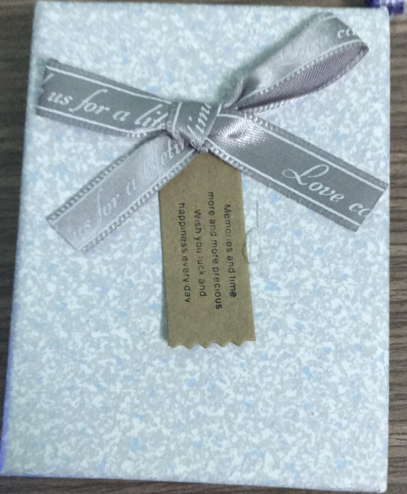

Lý do
Vì em đã mệt mỏi với cuộc sống này.Mỗi ngày đối với em như sự thất bại của mình.Em ước được chị tâm sự với mình,nhưng thật là khó khăn có lẽ em đang cảm thấy mình muốn được trầm cảm
Thông tin
Được viết bởi I K Y(Jonathan Levin) và cảm ơn Krish đã hỗ trợ về giao diện.
Hôm nay là 12/10
Em đã viết xong lần đầu trang web này.
Hôm nay cũng như những ngày kia thật là bùn nhỉ.Em đã không thể được trò chuyện với chị,em đã đợi chị được 3 tuần nay rồi chị vẫn không nhắn tin em dù một tin nhắn cũng được .
Em cảm thấy thật đau vì chị là tất cả mọi thứ đối với em.Nên em đã tự suy nghĩ mình phải trở nên thay đổi về cách nói và giao diện để không làm chị chán ghét mình.
Cố lên tôi ơi vì sắp tới sinh nhật chị rồi.
Ngày 13/10
Một ngày mệt mỏi vì phải sắp xếp lớp,ôi thật là ồn ào mà
Ngày 14/10
Hôm nay em đã chúc mừng sinh nhật chị tuy ngày mai mới đúng nhưng em đã nghĩ rằng"Nếu như mình chúc trước 1 ngày chắc chị sẽ ngạc nhiên lắm" nhưng em đã ko thấy chị trả lời hay gì luôn.
Thật là đau mà
Lời xin lỗi của em
Em xin lỗi vì đã không thể tặng được cây son chị thích đáng lẽ ngày mai chị có thể sẽ có nhưng đã thất bại >_
Ngày 15/10
Chúc mừng sinh nhật chị của em nha.Em đã mua cây son chị thích rồi đó mai là nội em đưa lên rồi đó,em sẽ nhờ dì Hà đưa cho chị nè.
Chúc chị sẽ có những điều tốt đẹp xung quanh mình,mong chị có thể được đi xa hơn ...em chúc được tới đó à.hiihihihihihihi
Em ước được nói chuyện với chị còn cao lun á thì em được gặp chị
Ngày 16/10

Em đã mua xong món quà rồi đó chị ơi,em mong chị sẽ nhận được món quà đó vào tối nay ghê không biết mặt chị sẽ như thế nào lun.
Có lé em đã thất bại trong tình yêu,em ko thể khiến cho chị vui được.Em đã thua chị,
Em xin lỗi vì ko thể hiểu được cảm giác của chị
Ngày 18/10
Thật buồn khi mình đã kết thúc chị à,từ tin nhắn hôm trước của chị đã khiến cho em không còn muốn sống nữa đấy lúc đó em không biết gì mà chỉ gục mà khóc,nhưng câu nói "chị sẽ đợi "gống như đã khiến cho em sống lại.